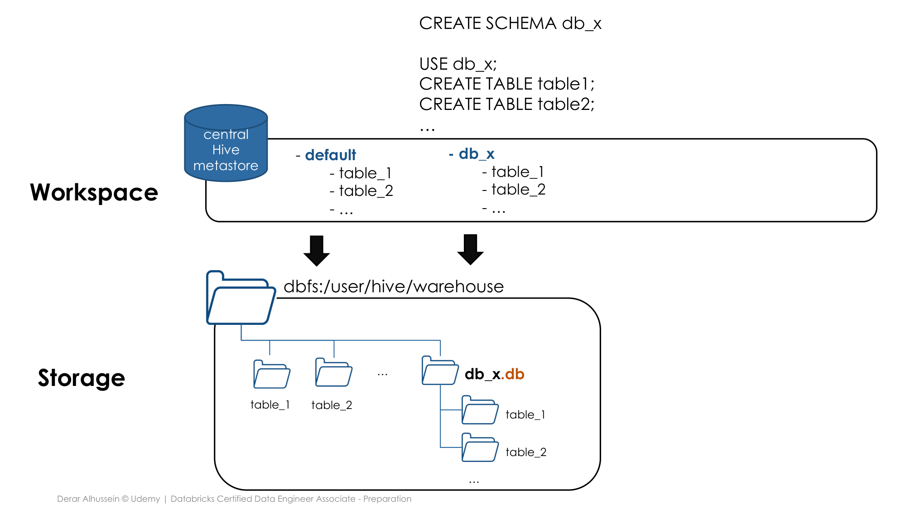
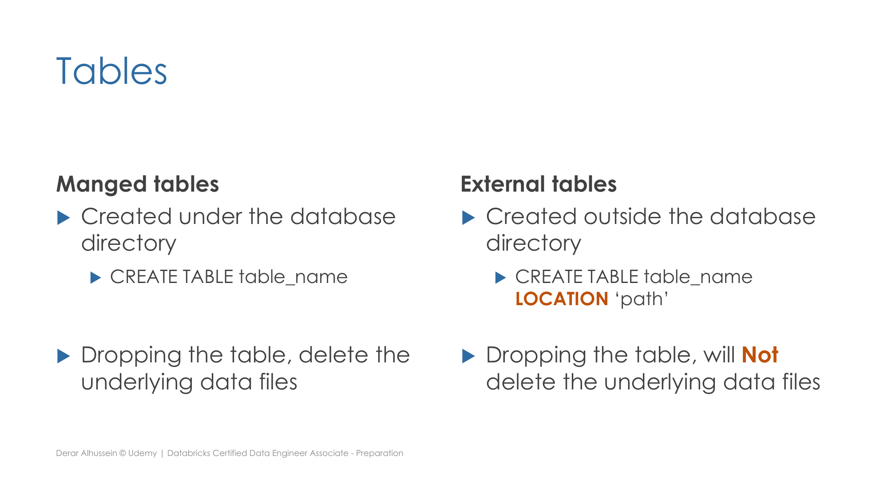

Section 1 · Databricks Intelligence Plattform · Quelle: Udemy-Kursmaterial „Relational Entities“, ergänzt mit Databricks-Dokumentation
Das Überblick-Kapitel dieser Section hat bereits die moderne Unity-Catalog-Hierarchie vorgestellt (Metastore → Catalog → Schema → Table/Volume). Historisch – und noch immer relevant, wenn man versteht, worauf Unity Catalog eigentlich aufsetzt – verwaltet Databricks diese Objekte über den sogenannten Hive Metastore. Dieses Kapitel erklärt die relationalen Grundbausteine (Datenbanken, Tabellen) auf dieser fundamentalen Ebene und zeigt, wie das LOCATION-Schlüsselwort den physischen Speicherort beeinflusst.
In Databricks ist eine Datenbank technisch identisch mit einem Schema im Hive Metastore – beide Befehle erzeugen exakt dasselbe Objekt:
CREATE DATABASE db_name; -- vollkommen gleichwertig: CREATE SCHEMA db_name;
Der Hive Metastore ist ein zentrales Metadaten-Repository: Er speichert nicht die Daten selbst, sondern Informationen darüber – welche Datenbanken und Tabellen es gibt, deren Schema (Spaltennamen und -typen), das Speicherformat und vor allem, wo die zugehörigen Daten physisch liegen. Jeder Databricks-Workspace verfügt über einen zentralen Hive Metastore, auf den alle Cluster zugreifen.
Ohne weitere Angaben landen neue Tabellen in der vorhandenen Standarddatenbank default, und ihre Daten werden physisch unter dem Hive-Standardverzeichnis dbfs:/user/hive/warehouse abgelegt. Legt man eine neue, eigene Datenbank an, entsteht dafür automatisch ein Unterordner mit der Endung .db (zur Unterscheidung von reinen Tabellenordnern) – ebenfalls unterhalb des Standardverzeichnisses:
CREATE SCHEMA db_x; USE db_x; CREATE TABLE table1 (...); CREATE TABLE table2 (...); -- Metadaten: Hive Metastore, Eintrag "db_x" -- Daten: dbfs:/user/hive/warehouse/db_x.db/table1, .../table2

Eine Datenbank muss nicht zwingend unter dem Hive-Standardverzeichnis liegen. Mit dem LOCATION-Schlüsselwort lässt sich beim Anlegen ein beliebiger, davon unabhängiger Pfad vorgeben:
CREATE SCHEMA db_y LOCATION 'dbfs:/custom/path/db_y.db'; USE db_y; CREATE TABLE table1 (...); -- Metadaten weiterhin im Hive Metastore -- Daten diesmal unter dbfs:/custom/path/db_y.db/table1
Wichtig: Die Metadaten landen in beiden Fällen gleichermaßen im zentralen Hive Metastore – unabhängig von LOCATION betrifft dieses Schlüsselwort ausschließlich den physischen Ablageort der Daten.
Dasselbe Prinzip lässt sich auch auf einzelne Tabellen anwenden – unabhängig davon, wo die umgebende Datenbank selbst liegt:
| Managed Table | External Table | |
|---|---|---|
| Erzeugung | CREATE TABLE table_name (...) – ohne LOCATION, im Datenbankverzeichnis | CREATE TABLE table_name (...) LOCATION 'pfad' – außerhalb des Datenbankverzeichnisses |
| Verantwortung | Hive/Unity Catalog verwaltet Metadaten und Daten | Hive/Unity Catalog verwaltet nur die Metadaten |
Verhalten bei DROP TABLE | Datendateien werden mitgelöscht | Datendateien bleiben erhalten |
| Automatische Optimierung | Predictive Optimization (automatisches OPTIMIZE/VACUUM) sowie Automatic Liquid Clustering (CLUSTER BY AUTO) verfügbar | Nicht verfügbar – Optimierung muss manuell angestoßen werden |

Ein oft übersehener, aber praktisch wichtiger Unterschied betrifft die automatische Wartung: Predictive Optimization – also das automatische Ausführen von OPTIMIZE und VACUUM im Hintergrund, ohne eigene Wartungsjobs planen zu müssen – sowie Automatic Liquid Clustering (CLUSTER BY AUTO, siehe Section 6) setzen beide eine Unity-Catalog-Managed-Table voraus. External Tables sind davon grundsätzlich ausgeschlossen, da Unity Catalog dort nur die Metadaten, nicht aber die zugrunde liegenden Dateien verwaltet und entsprechend keine automatisierten Schreiboperationen auf ihnen ausführen kann. Das ist ein weiteres gutes Argument, im Zweifel Managed statt External Tables zu verwenden.
Eine External Table lässt sich dabei in jeder beliebigen Datenbank anlegen – auch in einer, die selbst unter einem eigenen LOCATION-Pfad liegt. Die Tabellendefinition erscheint stets im Hive Metastore unterhalb der gewählten Datenbank, während die Daten unabhängig davon exakt dort landen, wo LOCATION es vorgibt:
USE db_x; CREATE TABLE table3 LOCATION 'dbfs:/some/path_2/x_table3'; -- Metadaten: Hive Metastore, unter db_x gelistet -- Daten: dbfs:/some/path_2/x_table3 (voellig unabhaengig vom db_x-Verzeichnis)
Der Hive Metastore bzw. sein Unity-Catalog-Nachfolger speichert also Metadaten – aber wie fragt man diese Metadaten selbst per SQL ab, statt sie nur über die grafische Oberfläche zu durchsuchen? Jeder Unity-Catalog-Katalog enthält dafür automatisch ein INFORMATION_SCHEMA: eine schreibgeschützte Sammlung von Systemtabellen bzw. -Views, die genau diese Metadaten – Kataloge, Schemas, Tabellen, Spalten, Berechtigungen und mehr – als ganz normal abfragbare Tabellen bereitstellt:
-- Alle Tabellen in einem bestimmten Schema auflisten SELECT table_catalog, table_schema, table_name, table_type FROM main.information_schema.tables WHERE table_schema = 'default'; -- Spalten und Datentypen einer bestimmten Tabelle nachschlagen SELECT column_name, data_type, is_nullable FROM main.information_schema.columns WHERE table_catalog = 'main' AND table_schema = 'default' AND table_name = 'orders';
Ein wichtiges Detail dabei: INFORMATION_SCHEMA ist rechte-bewusst – jede Abfrage liefert ausschließlich die Objekte zurück, auf die die aktuell angemeldete Person tatsächlich Zugriffsrechte besitzt. Das macht es zum idealen Werkzeug, um programmatisch (z. B. aus einem Governance-Dashboard heraus) zu prüfen, welche Tabellen und Spalten überhaupt existieren, ohne dafür erhöhte Rechte zu benötigen.
catalog.schema.table statt nur schema.table) und der Hive Metastore durch den zentralen, kontenweiten Unity-Catalog-Metastore abgelöst – das Grundprinzip von Managed vs. External Tables sowie die Bedeutung von LOCATION bleiben dabei inhaltlich unverändert. Für INFORMATION_SCHEMA-Abfragen empfiehlt Databricks, stets selektive Filter wie WHERE table_catalog = '...' AND table_schema = '...' zu setzen, um Timeouts bei sehr vielen Objekten zu vermeiden; außerdem werden alle Bezeichner (außer Spalten- und Tag-Namen) intern kleingeschrieben gespeichert, weshalb Vergleiche direkt in Kleinschreibung erfolgen sollten statt über LOWER()/UPPER()-Funktionen. Details zu den Zugriffsrechten (GRANT/REVOKE/DENY) und zur gezielten Konvertierung zwischen Managed und External unter Unity Catalog behandelt Section 7 dieser Dokumentation.